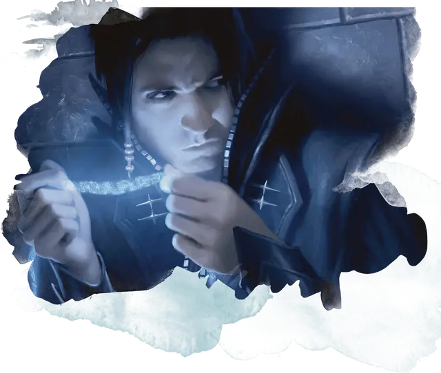

Кодировка мыслей
Encode Thoughts
Заговор, Очарование

Время сотворения 1 действие
Дистанция На себя
Компоненты С
Длительность Вплоть до 8 часов
Прикладывая палец к своей голове, вы извлекаете воспоминание, идею или сообщение из своего разума и трансформируете её в осязаемую ленту светящейся энергии — ленту мысли. Она существует в течение всей длительности заклинания или пока вы не наложите это заклинание снова. Лента мысли появляется в свободном пространстве в пределах 5 футов от вас как Крошечный невесомый полутвёрдый предмет, который можно держать и нести как ленту. В остальном она неподвижна.
Если вы накладываете это заклинание, пока концентрируетесь на заклинании или умении, позволяющем читать мысли других существ или манипулировать ими (например, обнаружение мыслей [detect thoughts] или изменение памяти [modify memory]), вы можете трансформировать в ленту мысли читаемые вами мысли или воспоминания.
Если вы накладываете это заклинание, пока держите ленту мысли, вы мгновенно получаете ту информацию, что содержит лента (накладывание заклинания обнаружение мыслей [detect thoughts] на ленту имеет тот же эффект).
Это заклинание доступно только Оперативникам Димиров, имеющим умение «Использование заклинаний» или «Магия договора»
— Господин Финик